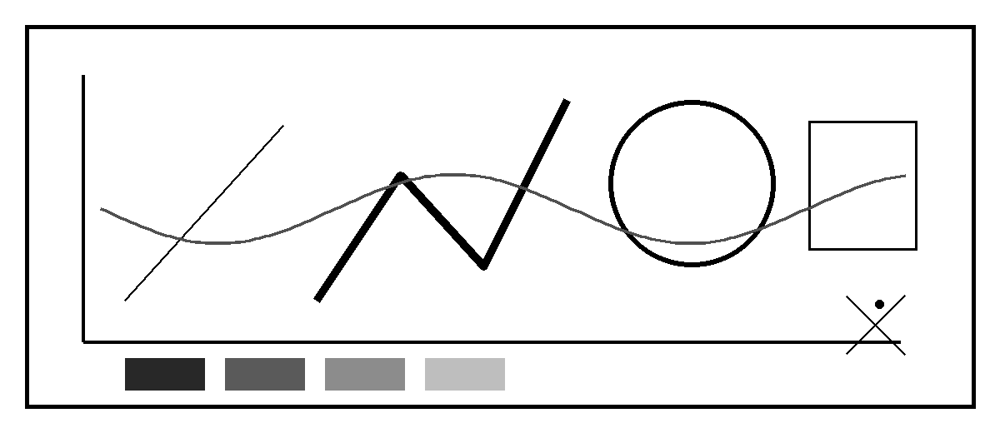

plotter-proc quality audit: visual index
PDF jobs stopped before previews because of the recorded math-routing failure. Open SVG objects in a browser at 100% zoom.
Whole-job controls
DOCX centerline hybrid A5 — 20 pages
DOCX outline hybrid A5 — 20 pages
Layout placement overlay
Semantic classification
Images, rotation and anchored wrapping

Extracted source raster
Page 6: inline raster and 12° rotated raster
Page 6 outline control
Page 7: anchored square-wrap raster
Tables, arrows and underlines
Semantic tables
Imported arrows (only 1 of 3 source VML lines)
Underlines
Long table pagination sample
Font and connection controls
Centerline font preview
Outline font preview
Connections safe
Connections aggressive (geometry hashes match safe)